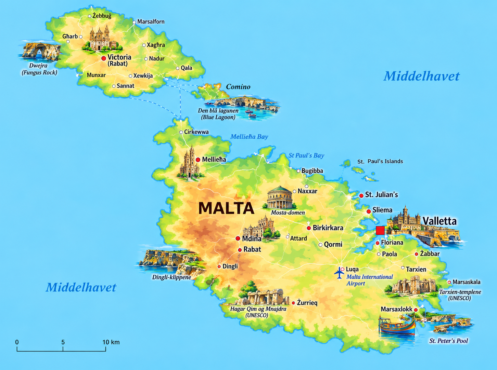
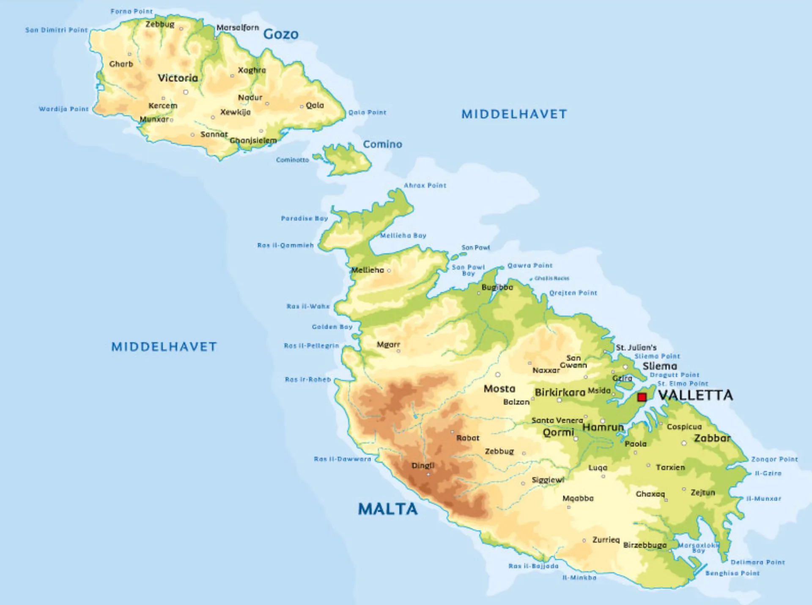

⚡ Korte fakta om Malta
🗺️ Kart over Malta
Klikk på et av kartene for å åpne og zoome i fullskjerm!


1. Natur og klima
Malta er en liten øystat midt i Middelhavet, rett sør for Sicilia! Landet består av tre bebodde øyer: Malta, Gozo og Comino.
Ta' Dmejrek (Dingli Cliffs) er Maltas høyeste punkt, 253 meter over havet.
Malta har dramatiske klippekyster og kjente badeplasser som den lyseblå lagoonsjøen Blue Lagoon!
Malta er et av Europas solrikeste steder med lange, varme somre og mild vinter uten snø.
Høyeste fjell
- Laster...
Lengste elver
- Laster...
Største innsjøer
- Laster...
Naturfakta: Malta har ingen permanente elver eller naturlige innsjøer. Landskapet er preget av kalkstein, kaktuser, oliventrær og lavere buskvekster!
2. Folk og samfunn
Det bor ca. 530 000 mennesker på Malta. Siden landet er lite, er det et av verdens mest tettbefolkede land!
🏢 Viktige steder på Malta
- 🔹 Valletta: En historisk festningsby og Europas minste hovedstad!
- 🔹 Birkirkara & St. Paul's Bay: Områder der det bor flest folk.
- 🔹 Mdina: Den gamle hovedstaden, også kalt «Den tause byen».
🎉 Festa & Fargerike båter
Hver landsby feirer sin egen «Festa» om sommeren med spektakulært fyrverkeri, musikk og opptog.
I havnene finner du fargerike fiskebåter kalt Luzzu, som har malte øyne foran for å beskytte fiskerne!
🗣️ Språk og kultur
Både maltesisk og engelsk er offisielle språk. Maltesisk er det eneste semittiske språket i EU, og skrives med det latinske alfabetet!
3. Stat og politikk
Malta er en republikk og et demokrati. Landet ble medlem av Den europeiske union (EU) i 2004.

Laster...
Maltas president og statsoverhode.
Laster...
Statsministeren som leder regjeringen.
Parlamentet
Representantenes hus møtes i hovedstaden Valletta.
📍 Malta er delt inn i 68 lokalforeninger (kommuner) fordelt på de tre øyene.
4. Maltas historie
🗿 Stenaldertempler (3600 f.Kr.)
Malta har megagallittiske templer som Ġgantija. De er eldre enn både pyramidene i Egypt og Stonehenge!
🛡️ Johannitterridderne (1530–1798)
Malteserridderne bygde enorme festninger og grunnla hovedstaden Valletta etter den store beleiringen i 1565.
Britiske styret & George Cross (1800–1964)
Malta var en britisk koloni. For heltemotet under 2. verdenskrig fikk hele øya tildelt maktkorset George Cross, som i dag er i flagget!
🕊️ Selvstendighet (1964)
Malta ble et helt uavhengig land fra Storbritannia 21. september 1964, og ble republikk i 1974.
 Medlem i EU (2004)
Medlem i EU (2004)
Malta ble medlem i EU og innførte valutaen Euro i 2008.
5. Økonomi og næringsliv
Hva lever de av på Malta? Siden øya har få råvarer, er tjenester, turisme og teknologi superviktig!
Turisme
Millioner av besøkende kommer hvert år for sol og historie.
Teknologi & iGaming
Malta er et internasjonalt senter for nettselskaper og tech.
Skipsfart
Sentrale havner for godstrafikk og reparasjon av skip.
Filmproduksjon
Store filmer som Gladiator og Game of Thrones er spilt inn her!
6. Kultur og mat
🏫 Mat & Mattradisjoner
Maltesisk mat er inspirert av Italia og Nord-Afrika.
🥐 Pastizzi:
Sprø butterdeig fylt med ricotta eller ertestuing – Maltas mest populære matbit!
⚽ Sport & Fritid
- 🏓 Fotball & Vannpolo: Vannpolo og fotball er blant de største sportene på øya.
- 🥽 Dykking: Malta er kåret til et av verdens beste steder for sportsdykking!
- 🎆 Fyrverkeri: Malta er berømt for sine spektakulære fyrverkerikonkurranser.
🧠 Test deg selv: Malta-Quiz!
Spørsmål laster...